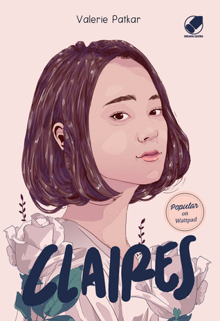
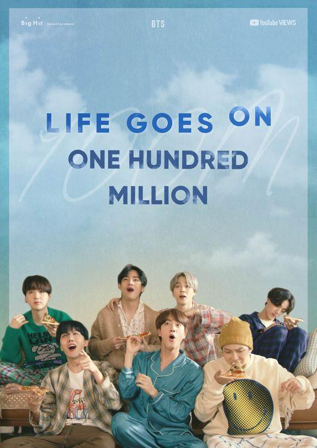
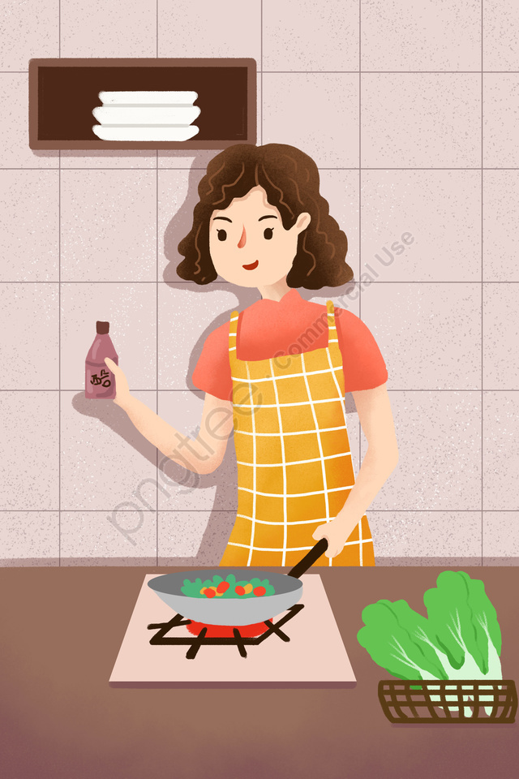

Home / Hobby
Hobby
Menonton Drama Korea
Salah satu hobby yang saya sukai adalah menonton drama korea. Saya sangat suka menonton drama korea khususnya drama ini yaitu drama yang berjudul "Vincenzo". Saya sudah menontonnya hingga episode terakhir dan saya tidak pernah bosan. Disaat saya sedang stress, drama korea sangat menghibur saya. Saya sering menontonnya pada saat setelah ujian / belajar, disaat saya jenuh, dan saat saya ingin menghabiskan waktu dirumah karena pandemi saat ini untuk menonton drakor yang menarik.
Review
Trailer
Membaca Novel

Membaca novel adalah hobby saya, saya menyukainya karena saya suka membaca cerita-cerita fiksi sebagai hiburan disaat sedang tidak ada kegiatan. Novel favorit saya berjudul "Claires" karya Valerie Patkar. Novel ini sangat menarik dan banyak diminati dikalangan remaja karena alurnya yang tidak membosankan dan sangat menyenangkan. Novel ini juga termasuk Best Seller loh ! Novel ini recomended banget deh. Masih banyak lagi novel-novel karya penulis terkenal lainnya yang saya sukai.
Review
Trailer
Mendengarkan Musik

Hobby yang paling saya sukai adalah mendengarkan musik. Yaps, pasti ada banyak orang yang menyukai musik, karena menurutku musik adalah bagian dari hidup kita. Dengan mendengarkan musik suasana perasaan kita bisa menjadi tenang. Bagiku hanya musik yang dapat mengerti perasaan kita. Musik favorit aku adalah musik yang dibawakan oleh bintang K-Pop terkenal yaitu BTS yang berjudul "Life Goes On". Musik ini sangat enak didengar, dan banyak yang suka terutama bagi para Army
Review
Video Clip
Memasak

Saya sangat suka sekali dengan memasak. Saya sering membantu ibu saya memasak di dapur oleh karena itu saya sering sekali diajarkan dan diberi tau resep cara membuatnya. Bagi saya resep masakan ibu adalah yang terbaik dan terenak dari segala masakan yang aku makan. Saya suka membuat kue kering, pancake, brownis dan masih banyak menu lainnya.
Review
Tutorial Membuat Pancake
Menyanyi

Saat masih kecil saya sering ikut lomba menyanyi, karena saya hobi bernyanyi. Suara saya memang tidak begitu merdu tapi saya selalu menyanyi apalagi saat sedang stress, sedih dan perasaan badmood, dengan menyanyi dapat melegakan hati saya. Saya sering bernyanyi lagu K-Pop, lagu barat, pop Indonesia dll. Lagu favorite saya adalah Still With You - Jungkook
Review
Favorite Song
Ngoding
Hobby terakhir yang saya sukai adalah ngoding. Walaupun saya belum expert dalam mengoding, tapi saya sedang belajar dan berusaha semaksimal mungkin untuk menjadi programmer yang profesional karena itu adalah cita-cita saya. Saya lumayan menguasai beberapa bahasa pemrograman dan sedang dalam tahap proses mempelajarinya.
Review